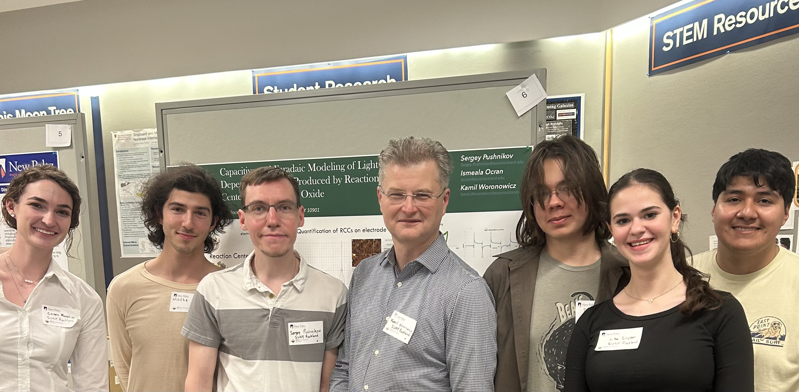

Label-Free Electrochemical Biosensor for SARS-CoV-2 Detection
Bioelectrochemistry | Medical Diagnostics | Point-of-Care Technology
Mission Overview
Engineered a novel electrochemical biosensor platform for rapid, cost-effective detection of SARS-CoV-2 spike protein using ACE2-receptor interactions on graphene oxide-modified electrodes. This label-free approach addresses critical limitations in current diagnostic technologies by eliminating expensive instrumentation requirements while achieving detection limits from nanomolar to femtomolar concentrations — a sensitivity range suitable for clinical applications.
My Contributions
- Designed and optimized electrode functionalization protocol using EDC crosslinking chemistry for ACE2 immobilization on graphene oxide surfaces
- Conducted cyclic voltammetry experiments across 8+ orders of magnitude concentration range (9.55 nM to 137 fM)
- Performed specificity validation through comprehensive blocking studies using BSA and milk proteins
- Analyzed electrochemical data with Microsoft Excel to determine preliminary binding affinity (Kd ~ 1.2-2.5 nM), consistent with literature values
- Developed MATLAB-based data analysis workflows for current-concentration calibration curves
- Presented findings at Rockland Industrial Development Agency and contributed to manuscript preparation
Tools & Methods
Results
- Achieved detection across 8+ orders of magnitude (9.55 nM → 137 fM)
- Determined preliminary Kd of 1.2-2.5 nM (matches SPR literature values)
- Demonstrated sensor specificity through BSA blocking (eliminated signal)
- Established proof-of-concept for label-free detection without redox mediators
- Identified platform scalability for portable diagnostic device development
Clinical & Commercial Relevance
This biosensor platform addresses a critical gap in pandemic preparedness: the need for rapid, portable, cost-effective diagnostic tools that can be deployed outside traditional laboratory settings. The label-free detection mechanism eliminates expensive reagents and complex labeling procedures, while the graphene oxide substrate enables miniaturization. Beyond COVID-19, this platform technology can be adapted for detecting other viral pathogens, therapeutic drug monitoring, or biomarker quantification, making it highly relevant for medical device companies developing next-generation point-of-care diagnostics.
Gallery
Cross-sectional view of the biosensor architecture

Technical schematic of the electrochemical biosensor
Cyclic voltammetry overlay showing concentration-dependent responses
Binding curve showing sensor response across concentration range